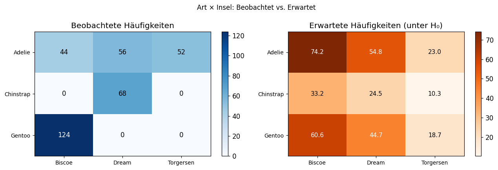
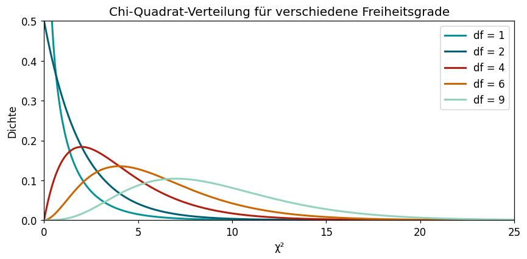

island Biscoe Dream Torgersen
species
Adelie 44 56 52
Chinstrap 0 68 0
Gentoo 124 0 03.8 Der Chi-Quadrat-Test
Lernziele
Am Ende dieses Unterkapitels kannst du:
- den Chi-Quadrat-Unabhängigkeitstest auf kategoriale Daten anwenden.
- eine Kontingenztafel erstellen und beobachtete vs. erwartete Häufigkeiten berechnen.
- den Test mit
scipy.stats.chi2_contingency()durchführen und interpretieren.
Kategoriale Daten: ein neues Testproblem
Alle bisherigen Tests haben metrische (messbare) Daten untersucht – Körpermassen, Schnabellängen, Blutdruckwerte. Jetzt interessieren uns kategoriale Daten: Merkmale, die in Gruppen oder Kategorien eingeteilt sind.
Fragen bei kategorialen Daten: - Hängt die Pinguinart von der Insel ab, auf der sie lebt? - Gibt es einen Zusammenhang zwischen Raucherstatus und Erkrankung? - Ist die Wahl der Lieblingsfarbe abhängig vom Geschlecht?
Der Chi-Quadrat-Unabhängigkeitstest (\chi^2-Test) prüft, ob zwei kategoriale Merkmale unabhängig voneinander sind.
Die Kontingenztafel
Das Herzstück des \chi^2-Tests ist die Kontingenztafel (auch Kreuztabelle): eine Tabelle mit den Häufigkeiten aller Merkmalskombinationen.
Beispiel: Pinguinart vs. Insel (Palmer Penguins):
Wenn Pinguinart und Insel unabhängig wären, würde jede Art auf jeder Insel proportional häufig vorkommen. Dass z.B. Chinstrap-Pinguine fast ausschließlich auf Dream Island leben, deutet auf eine Abhängigkeit hin.
Beobachtete vs. erwartete Häufigkeiten

Die Teststatistik
Die \chi^2-Teststatistik summiert die normierten quadratischen Abweichungen über alle Zellen:
\chi^2 = \sum_{i,j} \frac{(o_{ij} - e_{ij})^2}{e_{ij}}
Unter H_0 folgt \chi^2 einer Chi-Quadrat-Verteilung mit df = (\text{Zeilen} - 1) \cdot (\text{Spalten} - 1) Freiheitsgraden.

Beispiel: Pinguinart und Insel
Hypothesen: H_0: Pinguinart und Insel sind unabhängig vs. H_1: Es gibt einen Zusammenhang.
Signifikanzniveau: \alpha = 0{,}05
Python-Tipp: chi2_contingency()
from scipy import stats
import pandas as pd
# Kontingenztafel erstellen
ct = pd.crosstab(df['merkmal1'], df['merkmal2'])
# Chi-Quadrat-Test
chi2, p, dof, expected = stats.chi2_contingency(ct)
# expected: Tabelle der erwarteten Häufigkeiten unter H₀Voraussetzung: Alle erwarteten Häufigkeiten sollten \geq 5 sein. Wenn nicht, sind die Ergebnisse unzuverlässig (dann: Fisher’s exakter Test für kleine Stichproben).
Effektgröße: Cramér’s V
Ein signifikanter \chi^2-Test zeigt nur, dass ein Zusammenhang existiert – nicht, wie stark er ist. Für die Stärke des Zusammenhangs nutzt man Cramér’s V:
V = \sqrt{\frac{\chi^2}{n \cdot \min(r-1, c-1)}}
wobei r = Anzahl Zeilen, c = Anzahl Spalten. V liegt zwischen 0 und 1.
Wissensüberprüfung
---
primaryColor: '#0a9396'
shuffleQuestions: false
shuffleAnswers: true
---
### Wann verwendet man den Chi-Quadrat-Unabhängigkeitstest?
1. [x] Wenn man prüfen möchte, ob zwei kategoriale Merkmale statistisch unabhängig sind.
> Richtig! Dafür ist der χ²-Test gemacht – für kategoriale (nominale oder ordinale) Daten.
1. [ ] Wenn man zwei Mittelwerte vergleichen möchte.
1. [ ] Wenn man eine Stichprobe mit einem Sollwert vergleicht.
1. [ ] Wenn die Daten metrisch und normalverteilt sind.
### Was sind "erwartete Häufigkeiten" beim χ²-Test?
1. [ ] Die Häufigkeiten, die man in der Stichprobe beobachtet hat.
1. [x] Die Häufigkeiten, die man bei Unabhängigkeit der Merkmale (H₀) erwarten würde: e_ij = (Zeilensumme_i · Spaltensumme_j) / n.
> Richtig! Die erwarteten Häufigkeiten werden aus den Randsummen berechnet.
1. [ ] Die durchschnittlichen Häufigkeiten über alle Zellen.
1. [ ] Die Häufigkeiten einer Gleichverteilung.
### Die Freiheitsgrade beim χ²-Test für eine r×c-Kontingenztafel betragen:
1. [ ] r + c − 1
1. [ ] r · c
1. [x] (r − 1) · (c − 1)
> Richtig! df = (Zeilen − 1) · (Spalten − 1).
1. [ ] r + c − 2
### Eine χ²-Teststatistik von 0 würde bedeuten:
1. [ ] H₀ wird verworfen.
1. [x] Beobachtete und erwartete Häufigkeiten stimmen perfekt überein – kein Hinweis auf Abhängigkeit.
> Richtig! χ² = 0 heißt: alle (o_ij − e_ij)² = 0, also perfekte Übereinstimmung mit H₀.
1. [ ] Der Test ist nicht durchführbar.
1. [ ] Die Stichprobe ist zu klein.
### Was misst Cramér's V?
1. [ ] Den p-Wert des Chi-Quadrat-Tests.
1. [ ] Die Anzahl der Freiheitsgrade.
1. [x] Die Stärke des Zusammenhangs zwischen zwei kategorialen Merkmalen (0 = kein, 1 = perfekter Zusammenhang).
> Richtig! Cramér's V ist die Effektgröße zum χ²-Test.
1. [ ] Den Unterschied zwischen beobachteten und erwarteten Häufigkeiten.